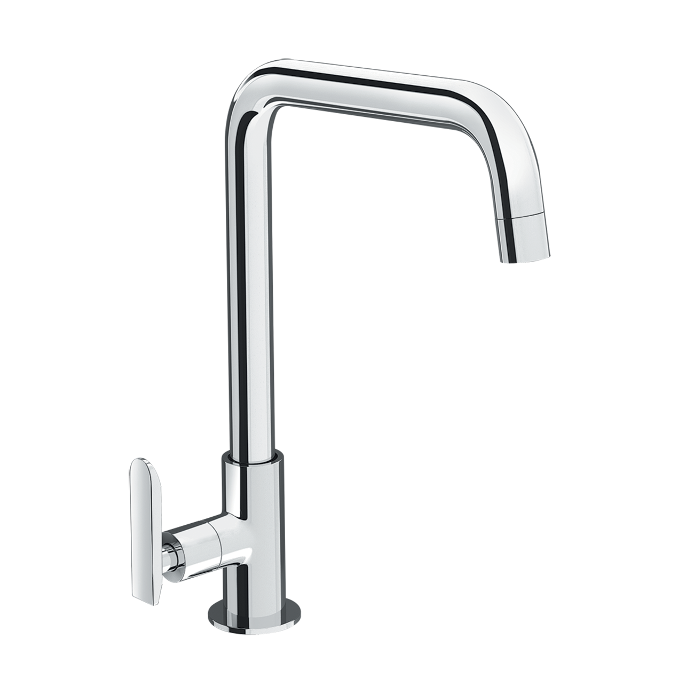
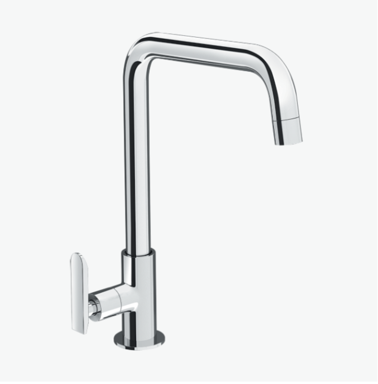
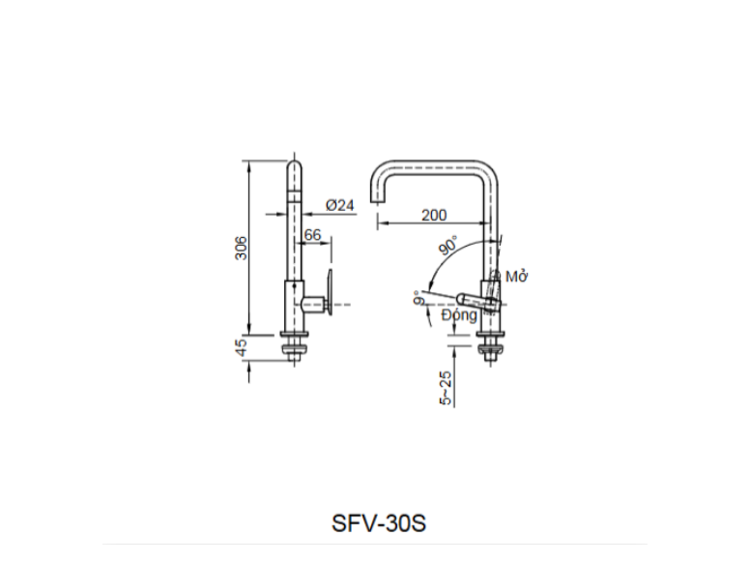

Nếu bạn đang tìm kiếm một chiếc vòi bếp đơn giản, bền bỉ và hiệu quả về chi phí thì vòi bếp SFV-30 chính là sự lựa chọn không thể bỏ qua. Sản phẩm này tập trung vào các tính năng cốt lõi cần thiết cho một căn bếp hiện đại: thiết kế thông minh tối ưu không gian, chất liệu an toàn và tuổi thọ vượt trội, tất cả được gói gọn trong một mức giá thành tiết kiệm.Thiết kế Chữ L cho không gian rộng rãiVòi rửa chén SFV-30 nổi bật với thiết kế dạng chữ L hiện đại và thực dụng. Kiểu dáng cao này tạo ra nhiều không gian hơn bên dưới vòi, cho phép bạn dễ dàng thao tác rửa những vật dụng to như nồi, chảo hoặc khay nướng mà không bị vướng víu.Xoay chuyển linh hoạt: Dù có dáng cứng cáp, vòi vẫn có thể xoay dễ dàng giữa hai bồn rửa chén, mang lại sự linh hoạt tối đa khi sử dụng chậu rửa đôi hoặc khi cần vệ sinh khu vực xung quanh.Tay gạt êm ái: Tay gạt được thiết kế để mang lại cảm giác êm ái, giúp bạn nhanh chóng mở/khóa nước và điều chỉnh lưu lượng một cách dễ dàng hơn..Độ bền vượt trội với chất liệu cao cấpVòi bếp INAX SFV-30 được chế tạo với cam kết về chất lượng và sự an toàn cho nguồn nước sinh hoạt của gia đình.Chất liệu đồng thau an toàn: Vòi được sản xuất từ chất liệu đồng thau - một vật liệu không chỉ bền bỉ mà còn đảm bảo không gây nhiễm khuẩn cho nước, giữ cho nguồn nước luôn sạch và an toàn cho sức khỏe.Lớp mạ Crom-Niken bền đẹp: Bề mặt ngoài được phủ lớp mạ Crom-Niken sáng bóng, chống ăn mòn hiệu quả. Lớp mạ này giúp vòi giữ được vẻ ngoài sạch sẽ, dễ dàng vệ sinh, và đảm bảo tuổi thọ trên 10 năm của sản phẩm.Van sứ chống rò rỉ: Van điều khiển bằng sứ chất lượng cao là yếu tố then chốt tạo nên độ tin cậy. Van sứ có độ bền cao và khả năng chống rò rỉ nước tuyệt đối, giúp bạn loại bỏ mọi lo lắng về việc nhỏ giọt gây lãng phí.Phun bọt chống bắn: Vòi được trang bị đầu phun bọt, làm mềm dòng chảy của nước, giúp chống bắn hiệu quả, giữ cho khu vực rửa luôn khô ráo.Vòi chậu rửa bếp lạnh SFV-30 là sự lựa chọn kinh tế, bền vững và thông minh, mang lại hiệu suất làm việc cao cho căn bếp mà không cần phải đầu tư quá nhiều vào các tính năng nóng lạnh không cần thiết. Ngoài ra, với thiết kế đơn giản, sản phẩm còn giúp bạn dễ dàng lắp đặt ngay tại nhà mà không cần đến thợ.Bản vẽ Vòi bếp SFV-30Thông số kỹ thuậtTên sản phẩmVòi bếp SFV-30DạngVòi bếp lạnhChất liệu- Van điều khiển bằng sứ có độ bền cao, chống rò rỉ nước - Chất liệu đồng thau không gây nhiễm khuẩn cho nước - Mạ Crom-NikenKích thước200 x 306mm (Cao x Rộng)Tính năng- Tay gạt êm ái, giúp nước nhanh chóng chảy ra và dễ dàng điều chỉnh nhiệt. - Tuổi thọ trên 10 năm. - Phun bọt chống bắn. - Giá thành tiết kiệmThương hiệuINAXThiết kế- Dạng dạng chữ L tạo ra nhiều không gian hơn, có thể rửa những thứ to như nồi, bếp. - Có thể xoay dễ dàng giữa 2 bồn rửa.Khác- Hotline tư vấn và bảo hành: 18006633
Vòi bếp SFV-30
Vòi bếp thương hiệu INAX.
Đã cập nhật danh sách yêu thích.
DANH MỤC: Vòi bếp
MÃ SẢN PHẨM: SFV-30
DEPTH: 0mm
HEIGHT: 200mm
WIDTH: 306mm
Nếu bạn đang tìm kiếm một chiếc vòi bếp đơn giản, bền bỉ và hiệu quả về chi phí thì vòi bếp SFV-30 chính là sự lựa chọn không thể bỏ qua. Sản phẩm này tập trung vào các tính năng cốt lõi cần thiết cho một căn bếp hiện đại: thiết kế thông minh tối ưu không gian, chất liệu an toàn và tuổi thọ vượt trội, tất cả được gói gọn trong một mức giá thành tiết kiệm.Thiết kế Chữ L cho không gian rộng rãiVòi rửa chén SFV-30 nổi bật với thiết kế dạng chữ L hiện đại và thực dụng. Kiểu dáng cao này tạo ra nhiều không gian hơn bên dưới vòi, cho phép bạn dễ dàng thao tác rửa những vật dụng to như nồi, chảo hoặc khay nướng mà không bị vướng víu.Xoay chuyển linh hoạt: Dù có dáng cứng cáp, vòi vẫn có thể xoay dễ dàng giữa hai bồn rửa chén, mang lại sự linh hoạt tối đa khi sử dụng chậu rửa đôi hoặc khi cần vệ sinh khu vực xung quanh.Tay gạt êm ái: Tay gạt được thiết kế để mang lại cảm giác êm ái, giúp bạn nhanh chóng mở/khóa nước và điều chỉnh lưu lượng một cách dễ dàng hơn..Độ bền vượt trội với chất liệu cao cấpVòi bếp INAX SFV-30 được chế tạo với cam kết về chất lượng và sự an toàn cho nguồn nước sinh hoạt của gia đình.Chất liệu đồng thau an toàn: Vòi được sản xuất từ chất liệu đồng thau - một vật liệu không chỉ bền bỉ mà còn đảm bảo không gây nhiễm khuẩn cho nước, giữ cho nguồn nước luôn sạch và an toàn cho sức khỏe.Lớp mạ Crom-Niken bền đẹp: Bề mặt ngoài được phủ lớp mạ Crom-Niken sáng bóng, chống ăn mòn hiệu quả. Lớp mạ này giúp vòi giữ được vẻ ngoài sạch sẽ, dễ dàng vệ sinh, và đảm bảo tuổi thọ trên 10 năm của sản phẩm.Van sứ chống rò rỉ: Van điều khiển bằng sứ chất lượng cao là yếu tố then chốt tạo nên độ tin cậy. Van sứ có độ bền cao và khả năng chống rò rỉ nước tuyệt đối, giúp bạn loại bỏ mọi lo lắng về việc nhỏ giọt gây lãng phí.Phun bọt chống bắn: Vòi được trang bị đầu phun bọt, làm mềm dòng chảy của nước, giúp chống bắn hiệu quả, giữ cho khu vực rửa luôn khô ráo.Vòi chậu rửa bếp lạnh SFV-30 là sự lựa chọn kinh tế, bền vững và thông minh, mang lại hiệu suất làm việc cao cho căn bếp mà không cần phải đầu tư quá nhiều vào các tính năng nóng lạnh không cần thiết. Ngoài ra, với thiết kế đơn giản, sản phẩm còn giúp bạn dễ dàng lắp đặt ngay tại nhà mà không cần đến thợ.Bản vẽ Vòi bếp SFV-30Thông số kỹ thuậtTên sản phẩmVòi bếp SFV-30DạngVòi bếp lạnhChất liệu- Van điều khiển bằng sứ có độ bền cao, chống rò rỉ nước - Chất liệu đồng thau không gây nhiễm khuẩn cho nước - Mạ Crom-NikenKích thước200 x 306mm (Cao x Rộng)Tính năng- Tay gạt êm ái, giúp nước nhanh chóng chảy ra và dễ dàng điều chỉnh nhiệt. - Tuổi thọ trên 10 năm. - Phun bọt chống bắn. - Giá thành tiết kiệmThương hiệuINAXThiết kế- Dạng dạng chữ L tạo ra nhiều không gian hơn, có thể rửa những thứ to như nồi, bếp. - Có thể xoay dễ dàng giữa 2 bồn rửa.Khác- Hotline tư vấn và bảo hành: 18006633
DANH MỤC: Vòi bếp
MÃ SẢN PHẨM: SFV-30
DEPTH: 0mm
HEIGHT: 200mm
WIDTH: 306mm